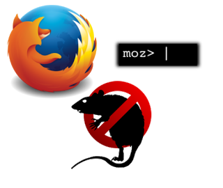

I’m not going to lie to you, what you’re about to read is really cool.
Controlling all sort of stuff with Ratpoison, as you can see in my previous posts, is pretty neat and you can extend it to control your browser as well.
These are the current capabilities:
Every command start with the Ratpoison prefix + ‘f’ like in C-t f:
**Command** **Action**
f Facebook
y Youtube
r Reddit
g Github
o Open a new tab
w Open a new window
s Search for the current content in the clipboard
/ Jump to the tab with url mathing a user input
l Open a new tab with the lyrics of the currenlty playing song (mpd)What does this do?, you might be wondering…
…Well, this does a little bit more than what you’re probably thinking.
Take for instance the f command, it has the “Facebook” action which means that:
No matter where you are, which window currently has the focus, or even if Firefox is not currently running. Firefox will be started (if needed) and will acquire the focus.
Then all your tabs will be parsed (starting from the last one), and if a Facebook tab is found then jump to it; if there is no Facebook tab opened then start a new one.
The same is applied to any of the other pages available (The list can be extended to suit you needs).
The o commands is self explanatory, the only advantage of this one is the ability to have a fast new tab no matter where you are, which window has the focus, or if Firefox is running or not.
The s command is quite nice, here is an use case:
You’re compiling some code, but the compiler complains with a cryptic message, so you use tmux to copy the error message, then issue the key sequence C-t f / and BANG!, no matter what, a new Firefox tab is just in front of you with the Google results of your error message. And this is applicable to any content in your clipboard as well!
The / command prompts the user for a query and jumps to the tab which URL contains the query as a substring.
The l will take the name of the currently playing song in MPD, google it, and open the first google result for the song lyrics in a new tab.
How to
The main dependencies of all this are:
- Firefox
- Mozrepl
- Ratpoison
- Expect
You can install them all with the system package manager, except for Mozrepl which you can get from Firefox addons.
This also depends on a Ratpoison script introduced in the previous posts, so be sure to have it.
Some extra ~/.ratpoisonrc is needed for the new mappings:
newkmap firefox
definekey firefox f exec ~/.scripts/ratpoison/firefox.sh select_tab facebook
definekey firefox y exec ~/.scripts/ratpoison/firefox.sh select_tab youtube
definekey firefox e exec ~/.scripts/ratpoison/firefox.sh select_tab evirtual
definekey firefox r exec ~/.scripts/ratpoison/firefox.sh select_tab reddit
definekey firefox g exec ~/.scripts/ratpoison/firefox.sh select_tab github
definekey firefox o exec ~/.scripts/ratpoison/firefox.sh new_tab
definekey firefox w exec ~/.scripts/ratpoison/firefox.sh new_window
definekey firefox s exec ~/.scripts/ratpoison/firefox.sh clipboard_search
definekey firefox l exec ~/.scripts/ratpoison/firefox.sh search_lyrics
definekey firefox slash exec ~/.scripts/ratpoison/firefox.sh search_tab
bind f readkey firefoxMost of the magic is performed thanks to the amazing Mozrepl. Unfortunately I couldn’t get it to load an external script, but Expect is needed for the communication with it anyways, so lets give it the script line by line.
The select_tab.js script is on charge of parsing the tabs to find one that matches the query and jump to it.
function selectTab(page) {
var numTabs=gBrowser.browsers.length;
var url="";
for(i=numTabs-1; i>0; i--) {
url=gBrowser.browsers[i].contentDocument.location.href;
if(url.search(page) != -1) {
gBrowser.tabContainer.selectedIndex=i;
return true;
}
}
return false;
}Use Expect and the select_tab.expect script to perform the telnet communication with Mozrepl and send the script and commands as well.
#!/usr/bin/expect
set page [lindex $argv 0]
set port 4242
set file [open "select_tab.js"]
set content [split [read $file] "\n"]
close $file
spawn telnet localhost $port
foreach line $content {
send "$line\r"
}
send "selectTab(\"$page\");\r"
expect "repl2> "
expect {
"true" {
exit 0
}
"false" {
exit 1
}
}Now the firefox.sh script, invoked from the Ratpoison configuration, will glue it all together.
#!/bin/bash
URL=""
function set_url {
case "$1" in
'facebook')
URL="www.facebook.com"
;;
'youtube')
URL="www.youtube.com"
;;
'reddit')
URL="www.reddit.com"
;;
'github')
URL="www.github.com"
;;
'evirtual')
URL="evirtual.ucuenca.edu.ec"
;;
esac
}
function select_tab {
cd ~/.mozrepl/
expect select_tab.expect "$1" > /dev/null
if [[ $? != 0 ]]; then
set_url "$1"
if [[ "$URL" != "" ]]; then
firefox --new-tab "$URL"
fi
fi
}
function search_tab {
query=`ratpoison -c "prompt [Tab] > "`
if [[ "$query" == "" ]]; then exit 0; fi
select_tab "$query"
}
function clipboard_search {
search=$(xclip -selection clipboard -o)
if [[ "$search" == "" ]]; then
exit 0
fi
search=$(echo "$search" | sed 's/ /+/g')
google_url="https://www.google.com/search?q=$search"
firefox --new-tab "$google_url"
}
function search_lyrics {
search=$(mpc | head -n 1)
if [[ "$search" == "" ]]; then
exit 0
fi
search+=" lyrics"
search=$(echo "$search" | sed 's/ /+/g')
curl -A 'Mozilla/5.0 (X11; Linux i586; rv:31.0) Gecko/20100101 Firefox/31.0'\
"https://www.google.com/search?q=$search"\
> /tmp/google_search_result.html
url=$(sed 's/>/>\r\n/g' /tmp/google_search_result.html\
| grep -m 1 '<a href="http:.*".*>'\
| sed -e 's/.*href="\([^"]*\)".*/\1/')
firefox --new-tab "$url"
}
case $1 in
'select_tab')
~/.scripts/ratpoison/app_select.sh firefox
select_tab $2
;;
'search_tab')
search_tab
;;
'new_tab')
~/.scripts/ratpoison/app_select.sh firefox
firefox --new-tab "http://www.google.com"
;;
'new_window')
ratpoison -c "nextscreen"
firefox --new-window "http://www.google.com"
;;
'clipboard_search')
~/.scripts/ratpoison/app_select.sh firefox
clipboard_search
;;
'search_lyrics')
~/.scripts/ratpoison/app_select.sh firefox
search_lyrics
;;
esacYou can find all those scripts and configuration bits in my Dotfiles.